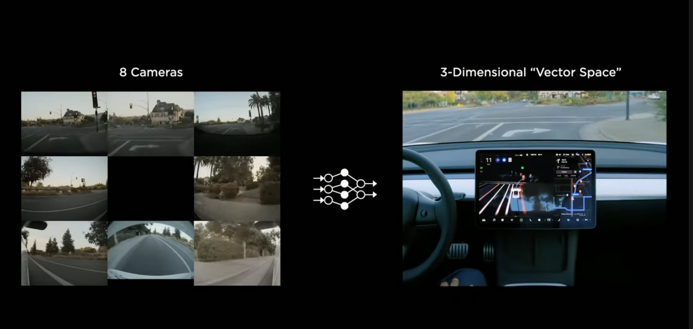
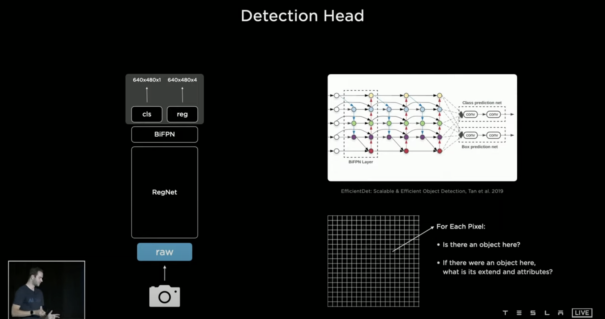
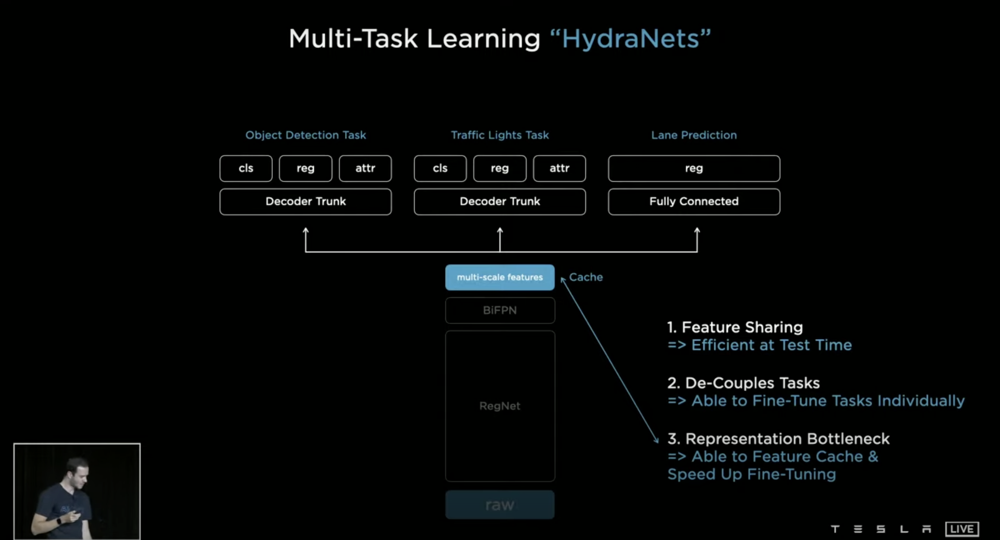

Tesla AI Day 요약
2021년 테슬라의 AI Day 의 내용을 요약하여 한글 버전으로 정리하였다.


첫 포스팅이다. 처음으로 하는 글이라 조금은 떨린다. 한글 번역으로 요약을 하는 것이 처음이고 개인적인 공부를 위해서 정리를 하는 거기 때문에 다수의 오역이나 오류가 있을 수 있다. 충분히 그런 점은 감안해서 글을 봐주셨으면 한다. 아, 그리고 모든 내용은 Tesla 공식 발표 영상을 해석하고 들어가면서 적은 내용이다. 참고하시길.
2021년 8월 (미국 시간 기준) 으로 테슬라에서 AI Day 라는 Keynote를 열었다. 뭐 사실 가장 충격적이고 놀라웠던 건 Tesla Bot 이지만 그건 차차 설명해 나가자. 발표 순서대로 작성을 하자면 Tesla Vision을 가장 소개를 하였다. 지난 CVPR 2021 에서도 "Tesla가 LiDAR를 왜 사용하지 않는가" 에 대한 내용으로 HD Map과 LiDAR로 생기는 문제들을 보여주면서 Vision을 추구하는 Tesla의 이유를 보여주었다. 이번에도 마찬가지로 Vision과 약간의 센서들만을 활용하여 그들이 어떻게 자율주행 시스템을 구현하는 지에 대해 보여주었다.
Tesla Vision (by Andrej Karpathy)
번외로 Andrej에 대한 간단한 설명을 하자면 현재 Tesla Auto-polit의 Chief Developer에 있는 개발자로 그 이전에도 컴퓨터 시각처리에서 굉장히 많은 이력을 지니고 있다. 자세한건 여기로...
테슬라에서는 총 8개의 카메라를 활용하여 HD Map을 구성한다고 한다. 가장 중요한 것은 Vision 만을 활용했다는 점이다. 8-Camera로 CNN 를 거쳐 3-Dimensional "Vector Space"로 변환을 했음을 보여주는 사진이다. 직역하면 3차원 벡터 공간인데 HD Map을 좀 더 그들 만의 용어로 풀이한 셈이다. 쉽게 말해 8개의 카메라로 구성된 데이터들을 조합하여 자동차를 중심에 두고 주변에 어떤식으로 지형이 이루워져 있는지를 3D 지도로 구성한 것을 3-Dimensional "Vector Space" 라고 부르는 것이다. 어렵게 생각하지 말자 :)
Andre는 발표에서 인간과 컴퓨터의 작동 원리에 대해서 비교를 많이 하면서 진행을 하는데 이번에도 사람의 뇌와 R-CNN 구조를 보여주면서 결정 트리 구조를 간단히 보여주었다. 그리고 사람의 눈에 각막을 통해 들어온 색을 구분하는 것을 카메라에서 CCD로 받아 이를 데이터로 변환한다고 설명 하였다. 이 부분이 가장 중요한데, Neural Network Backbone을 시작으로 그들의 CNN 구성 방식에 대하여 소개를 하였다. 저화질에서도 멀리 있는 자동차를 보고 자동차인지 아닌지 확인 하기 위해서는 "Mutil-Scale Featured Pyramid Fusion"이 쓰인다고 한다. 자세히 설명을 해주는데...
사실 이 슬라이드 이전에 Neural Network Backbone 에 대해서 소개를 해주었는데 사진이 너무 많아서 말로만 간단히 설명을 하겠다. Mutil-Scale NNB 를 생각하면 픽셀 단위로 점점 Bounding Box가 작아지는데 Bounding Box가 작을수록 픽셀의 수를 적지만 그 부분을 정교하게 볼 수 있고, Bounding Box의 픽셀의 수가 클수록 정교함이 높아지게 된다. 이는 객체인식의 기본으로 여겨지고 Andre는 이를 Neural Network Backbone, 뉴런 네트워크의 중심과 같은 것이라고 언급하며 보여주었다. 이 Neural Network를 BiFPN으로 활용을 한다는 것이다.
쌩으로 받은 Image을 BiFPN 으로 어떤 물체인지 (Class Prediciton), 그리고 해당 물체가 어디 있는지 (Box Prediction) 을 진행한다. BiFPN을 간단히 설명 하면 피라미드 형식의 뉴런 네트워크 같은 것인데 빠른 Mutil-Scale Feature Fusion 이며 PANet와 비교 했을 때 비교적으로 더 빠른 속도로 바운딩 박스와 물체 인식이 가능하다고 한다.
사진에서 보면 각 픽셀에서 어디에 물체가 있고 그 물체가 차지하는 범위는 어디까지 인가를 찾는다고 설명을 해준다. cls 는 class를 의미하고 reg는 regconition 을 의미한다. 개인적인 의견을 추가적으로 말하면 우리가 말하는 지금 사진이라고 하는 것은 모두 2D (2-Dimensional) 으로 이루워져 있다. 하지만 사람이 운전을 하고 물체를 볼때에는 3D (3-Dimensional) 으로 인식하게 된다. 이 말인 즉슨 지금 BiFPN 으로 처리된 데이터만으로 자율주행을 구현하기에는 한계점이 있다는 것이다. 그렇기에 위에서 앞써 언급한 HD Map 이 활용되는 부분이고 HD Map이 중요시 여겨지는 부분이다.
Andre는 자동차만을 인식하는 것을 넘어서 다양한 일을 동시에 처리 하기를 원했고 이를 구현하기 위해 HydraNets를 구현하게 되었다고 한다. 앞서 말했듯이 Raw, RegNet, BiFPN가 Backbone 등뼈와 같은 Body라고 칭하고 multi-scale features는 Bottleneck, 그 위로 부터는 Heads 라고 칭한다.
HydranNets는 사진과 같이 순차적으로 진행이 되는데 가장 먼저 Backbone에서 이미지의 Feature를 찾아낸다. 2번째로 Traffic Light Task (신호등 처리), Object Detection Task (객체 인식 처리), Lane Prediciton (차선 예측) 이 Heads가 Backbone으로 부터 받은 features로 처리를 한다. 3번째 마지막으로는 Bottleneck 와 Feature Cache로 객체를 다시 detecting 하고 초기 detection 보다 속도를 높이게 된다.

HydraNets를 통한 최종적인 결과물이다. 사진을 보면 대략적으로 어디까지 구현이 되었는지 볼 수 있다. Lane Change는 최종적인 차량 주행 방향을 의미하는 것 같고, Ego Speed는 차량 속도, time은 뭐... 총 프로그램 실행시간이 아닐까 싶고, fps는 Frame Per second 영상의 속도를 말하는 것 같다. 개인적으로 신기했던 것은 현재 자동차 객체를 3D로 받아 인식을 한다는 것인데 간단한 HD Map을 구현 가능하다는 점이다.
무튼 Andrej 팀은 이걸 개발하고 만족을 했을리가 없다. 만족을 했다면 이렇게 간단하게 설명하고 넘어갈 내용이기 아니기도 하다. HydraNets의 문제가 있었는데 Lane Prediction에서 문제가 있었다고 한다. 차량에 장착이 된 8 개의 카메라에 있는 프레임으로는 Lane Detection이 잘 된다. 하지만 가장 중요한 것은 3D Mapping이 가능한가이다. 개인적인 견해를 붙여서 말하자면 각 프레임에서 Lane Prediciton을 한다는 것은 사실 굉장히 쉬운 부분이기도 하다. 간단히 Edge Detection 만으로도 충분히 가능하다. 3D Mapping에서 문제가 생기는 이유는 다양한 이유가 있겠지만 아래 사진을 보면 비교적 이해가 쉬울 것이다.